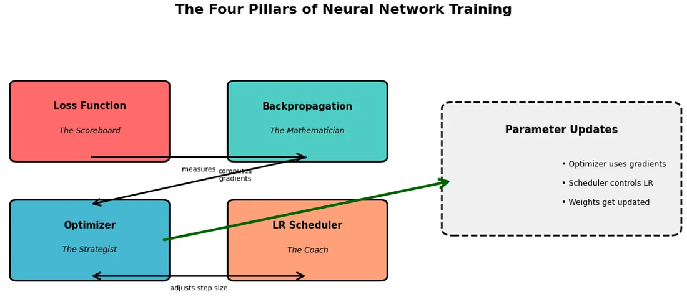

2025-10-24
Optimizer in Neural Network
\n
参考文章：理解神经网络优化器：从梯度到 AdamW 之旅 | by Shashank Sane | Oct, 2025 | Medium --- Understanding Neural Network Optimizers: A Journey from Gradients to AdamW | by Shashank Sane | Oct, 2025 | Medium
(99+ 封私信 / 81 条消息) 深度学习经典论文分析（八）-ADAM: A METHOD FOR STOCHASTIC OPTIMIZATION - 知乎
首先我们借用一下medium这篇博客中关于training四个pillars的介绍：
\n\n\n\n
The Four Pillars of Training: A Mental Model
训练的四大支柱：一种心智模型
\n\n\n\n
Think of training a neural network as navigating through a vast, multidimensional landscape where you’re searching for the lowest valley (minimum loss). Four distinct mechanisms work together:
想象训练神经网络就像在广阔的多维景观中航行，你正在寻找最低的谷地（最小损失）。四种不同的机制协同工作：
\n\n\n\n
1. Loss Function : Where are we, and how bad is it?
1. 损失函数：我们现在在哪里？有多糟糕？
The loss function is your compass — it tells you how far you are from your goal. Mean Squared Error, Cross-Entropy Loss — these are measurement tools, nothing more. They don’t tell you how to move, just how well (or poorly) you’re doing.
损失函数是你的指南针——它告诉你与目标的距离有多远。均方误差、交叉熵损失——这些都是测量工具，仅此而已。它们不会告诉你如何移动，只会告诉你做得有多好（或有多差）。
\n\n\n\n
2. Backpropagation : Which direction should we move?
2. 反向传播：我们应该朝哪个方向移动？
Backpropagation computes gradients — the slopes of the loss landscape with respect to each parameter. It answers: “If I nudge this weight slightly, does the loss go up or down, and by how much?” It’s pure calculus, a mechanical process of calculating derivatives through the chain rule.
反向传播计算梯度——损失函数相对于每个参数的斜率。它回答：“如果我稍微调整这个权重，损失会增加还是减少，以及增加或减少多少？”这是纯粹的微积分，通过链式法则计算导数的机械过程。
\n\n\n\n
3. Optimizer : How do we take the step?
3. 优化器：我们如何进行这一步？
Here’s where the magic happens. The optimizer takes those gradients and decides how to update your parameters. Should you move directly opposite to the gradient? Should you remember previous directions? Should different parameters move at different speeds? SGD, Adam, RMSprop — these are different philosophies of movement.
这就是魔法发生的地方。优化器获取这些梯度并决定如何更新你的参数。你应该直接与梯度相反的方向移动吗？你应该记住之前的方向吗？不同的参数应该以不同的速度移动吗？SGD、Adam、RMSprop——这些都是不同的运动哲学。
\n\n\n\n
4. Learning Rate Scheduler : How big should our steps be over time?
4. 学习率调度器：我们的步长应该有多大？
Even with the best optimizer, the size of your steps matters. Early in training, large steps might help you explore. Near convergence, tiny steps allow precision. Schedulers dynamically adjust this step size throughout training.
即使有最好的优化器，步长的大小也很重要。在训练初期，大步长可能有助于探索。在接近收敛时，小步长可以保证精度。调度器在整个训练过程中动态调整这个步长。
\n\n\n\n

\n\n\n\n所以optimizer决定了参数更新的方式（方向，更新哪些），在neural network不断发展的过程中，出现了SGD （随机梯度下降），Momentum ，以及更智能的Adam,AdamW等，并且在最新的成果中，出现了muon这样的新星优化器。当然相比于Adam是否有更佳的使用尚需证明
\n\n\n\n
这篇文章将主要讲解这些历史上以及当今主流的优化器，主要从他的原理与优缺点进行介绍
\n\n\n\n
SGD：随机梯度下降法，简单但极易掉坑
\n\n\n\n
SGD 体现了一种简单的哲学：朝着梯度相反的方向移动。如果梯度说“损失会沿着这个方向增加”，SGD 就会说“那我们就朝着相反的方向走。”
\n\n\n\n
甚至可以给你呈现一下SGD的实现：
\n\n\n\n
class SGD:\n def __init__(self, params, lr):\n self.params = list(params)\n self.lr = lr\n \n def step(self):\n for param in self.params:\n with torch.no_grad():\n param.data -= self.lr * param.grad\n \n def zero_grad(self):\n for param in self.params:\n param.grad = None
\n\n\n\n
SGD With Momentum
\n\n\n\n
\n